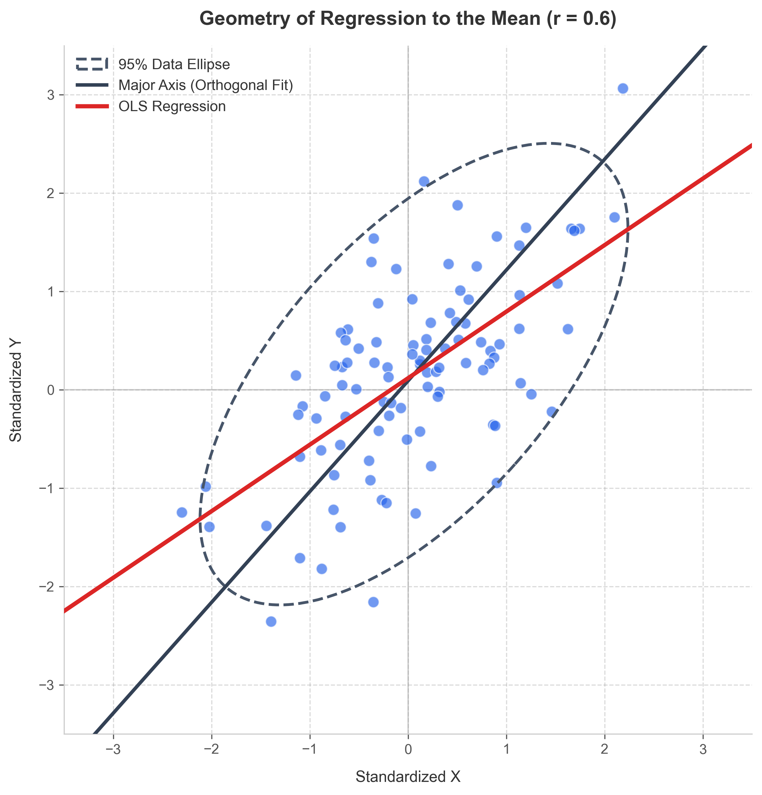

Tyler Venner
Data Scientist & Tech Lead.
Building ML Systems.
Lifelong Learner.

Data Scientist & Tech Lead.
Building ML Systems.
Lifelong Learner.
Hi! Nice to meet you. To introduce myself, I'd like to tell you a story.
Not that many know this about me, but I started at community college as a Mechanical Engineering major where I figured that I enjoyed mathematical modeling. I did fine at my time there, but I wasn't truly immersed in my work. That changed when I transfered to UC Davis and took my first every statistics class. I was instantly curious (perhaps asked too many questions in class!). My very kind professor, however, encouraged me to explore and learn further.
One day, we were looking at a standard scatterplot of two correlated variables overlaid with a data ellipse (an oval boundary capturing the spread of the points). I noticed a peculiarity with the plot: the linear regression line didn't align with the major axis of the ellipse! I raised my hand and asked, "Wait, why doesn't the line of best fit go straight through the major axis of the ellipse?"
My professor, Dr. Bissell, smiled and used my question to explain that this "tilt" was actually the geometric manifestation of regression to the mean. Seeing how this worked completely blew my mind. I remember thinking that this was the coolest thing ever haha.

What is the data ellipse?
In simple terms, imagine looking down at a mountain of data points from a drone. The ellipse is just a topographical contour line drawing a ring around the densest part of the mountain. Because it captures the overall shape of the cloud, its longest diameter (the major axis) points in the direction that maximizes projected variance.
The Discrepancy:
Imagine a scatterplot of two standardized variables X and Y with a positive correlation (0 < r < 1).
The major axis of the ellipse corresponds to the first principal component, the direction that maximizes variance. Because X and Y are standardized and have equal variance, this direction lies exactly along the line Y = X (a slope of 1).
However, an Ordinary Least Squares (OLS) regression line does not minimize perpendicular distance. Its goal is purely predictive: for each fixed X, it strictly minimizes vertical residuals. For standardized variables, its slope is exactly r.
Since 0 < r < 1, the regression slope r must be flatter than the principal axis slope of 1. Geometrically, the regression line is pulled toward the horizontal axis (the mean of Y), shrinking extreme predictions back toward zero.
That geometric difference is the visual manifestation of regression to the mean: extreme values of X are paired, on average, with less extreme values of Y.
He showed me that deeper knowledge of statistics (and math) was something worth pursuing. After the quarter, we met for coffee and he walked me through what he does as a Data Scientist. This first interaction at my transition to UC Davis was deeply impactful for me. Dr. Bissell, you are reading this, thank you.
Now, I currently work as a Data Scientist and Tech Lead at Davis Sensory Institute. There, I built a nice ML algorithm to uncover latent market structures from liking data (PULS). I also work as a contract ML engineer for Quesify where I build CV systems. In my free time, I like writing programs in C, experimenting in Linux, learning about ML systems, ML theory, and math. In fact, I document my independent studies, currently working through Boyd & Vandenberghe's Convex Optimization, on my YouTube channel, @TylerOptimizes.
When I'm not working or studying, you can find me in Japan, running, or eating ice cream.
If you are looking for the hard metrics and technical bullet points, feel free to grab my resume. Here is a more personal look at what I actually do day-to-day.
The Problem: I always found it frustrating that sports analytics papers usually just end with a boring table of coefficients confirming that bias exists, but they don't show you the actual structure of it. Plus, applying standard models to the NBA is incredibly messy because player salaries are distorted by rigid rules like rookie scales and max contracts.
The Solution: To get around this, I built a Stratified Double Machine Learning (DML) pipeline. By isolating free-market players to learn the true "price" of bias, I made a transportability assumption to counterfactually project those valuations across the entire league. I then fed this into a custom JAX/Optax dimension reduction model to build an interactive 3D map of market inefficiency. (Fun fact: the model strongly suggests LeBron James gets a massive premium purely for his seniority, even when controlling for his performance!)
The Problem: Have you ever tried to find historical flight prices online? It's surprisingly difficult, which makes building good predictive models for travel almost impossible.
The Solution: I decided to collect the data myself. I architected a fully serverless ETL pipeline on AWS that scrapes and processes about 50,000 daily flight prices for under $2 a month. Once I had the data lake set up in S3, I built a dual-model system: one to forecast route-level prices, and another to give me tactical "Buy/Wait" signals for individual flights. It's been a great playground for real-world MLOps and cloud cost optimization.
The Problem: We've all heard the phrase "correlation does not imply causation." But it always left me wondering: okay, then what can we actually prove about causality? I wanted to dive into the math behind causal discovery to find out.
The Solution: Using Elements of Causal Inference (by Peters, Janzing, and Schölkopf) as my guide, I built an interactive web app that simulates the PC Algorithm from scratch. It is essentially a sandbox that lets users visualize how conditional independence tests can actually recover causal graphs from purely observational data. It was a fantastic deep dive into the limits and power of causal math.
The Problem: I'm a big fan of burpees. But when I'm tired and focusing on my breathing, I almost always lose count of my reps. I figured I could just make my webcam count for me!
The Solution: I built a real-time computer vision exercise counter using OpenCV and MediaPipe. Instead of a standard motion-detection approach, I engineered a finite state machine based on the geometry of body landmarks. It effectively filters out "noisy" kinematic movements and logically groups complex sequences so it only counts a true, full-range-of-motion rep.
I'm a big believer that the real learning starts after you graduate. Even though I work as a Data Scientist, I'm constantly studying ML theory, especially from an optimization perspective. Inspired by Scott Young's MIT Challenge (though maybe a little less intense!), I decided to start a public study diary on YouTube. It's not a hyper-edited, algorithm-optimized tech channel. It's literally just me, every week, talking through the math, papers, and derivations I'm currently wrestling with.
Why put my study sessions on the internet? A few reasons. First, from my days as a physics tutor, I learned that the one way to better understand math is to try and explain it to someone else out loud. Second, it's the ultimate commitment device. If I promise a video every week, I have to actually sit down and do the reading. But it's also a personal time capsule. I just think it'll be incredibly neat to look back in five years and see how my intuition for this stuff has evolved.
I want to be super clear: I am not an expert teaching a masterclass here. I am very much a student in the trenches. If you're also trying to bridge the gap between just importing ML libraries and actually understanding the fundamental math underneath them, I'd love for you to follow along!